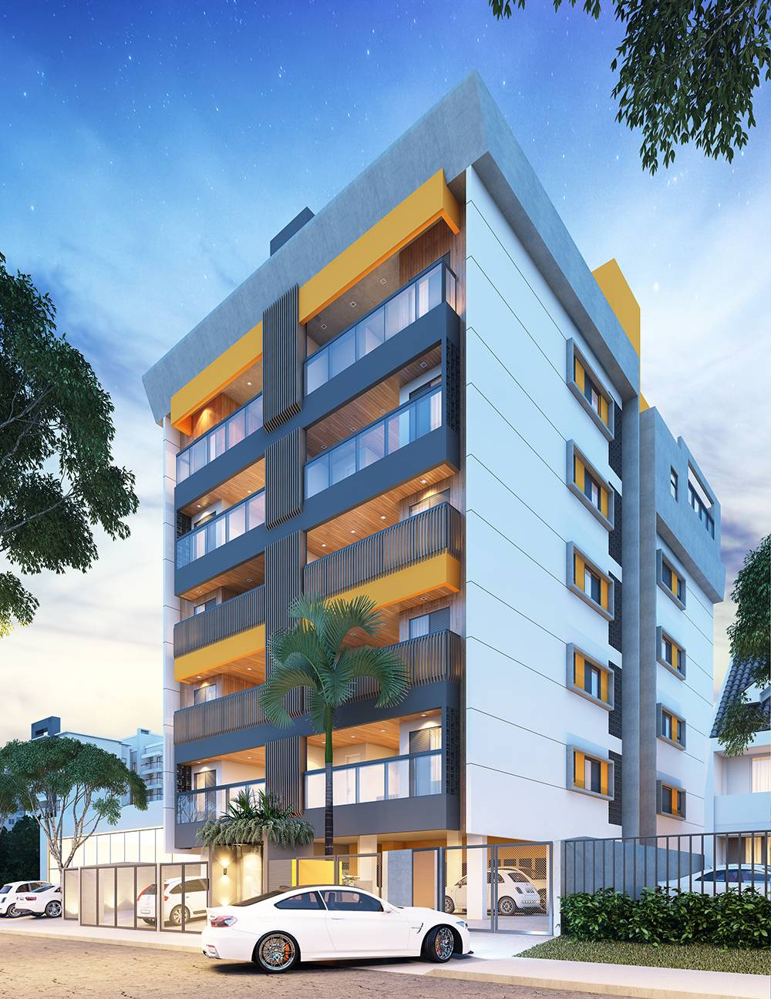

Viabilidade técnica
Definimos qual a opção de certificação mais adequada para que seu empreendimento ou residência seja elegível aos melhores padrões de desempenho.
Sustentabilidade
LEED, EDGE, GBC Casa&Condomínio e GBC Life.

Definimos qual a opção de certificação mais adequada para que seu empreendimento ou residência seja elegível aos melhores padrões de desempenho.
Através do estudo de viabilidade técnica, identificamos as estratégias mais adequadas a serem incorporadas em todo o processo.
As certificações focam na integração entre os projetos, na qualidade ambiental da edificação e no bem-estar do ocupante.
Acompanhamos todo o processo de análise junto ao órgão certificador, em fase de projeto e obra.
Certificações
As certificações visam documentar e mensurar as estratégias de sustentabilidade aplicadas no processo, garantindo a qualidade da edificação, o conforto e bem-estar para o ocupante e seu entorno, a redução do uso e do descarte de materiais e recursos, como também dos custos operacionais, utilizando das boas práticas durante todo o projeto, execução e operação.
Acompanhamos todo o processo de análise junto ao órgão certificador, em fase de projeto e obra, com nossos profissionais acreditados LEED GA, EDGE Expert, GBC Casa&Condomínio e GBC Life.